Profound / Work trial
Multi-Query
Content
Optimizer
An explainable content engine that learns how to rewrite.
Shawn Lin / October 2, 2026
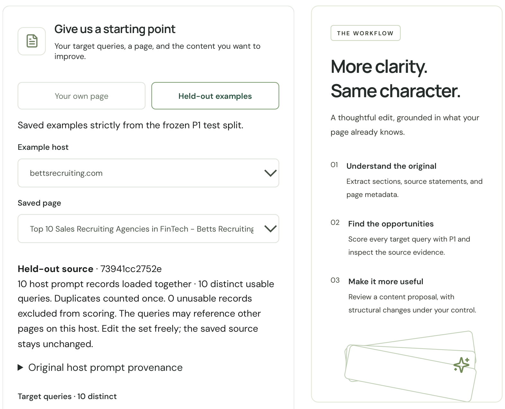
01 / The question
Can a host’s strongest pages
teach us how to improve its weakest?
LEARN THE PATTERNS
Five strongest cited scenarios
Query alignment, document structure,
and how the page answers the question.
APPLY THEM REPEATEDLY
Five weakest cited scenarios
A reusable optimization engine
that improves supported content.
A strong, loosely held assumption to validate with publication outcomes and customers.
02 / What shipped
From a page and its queries
to an explainable optimization loop.
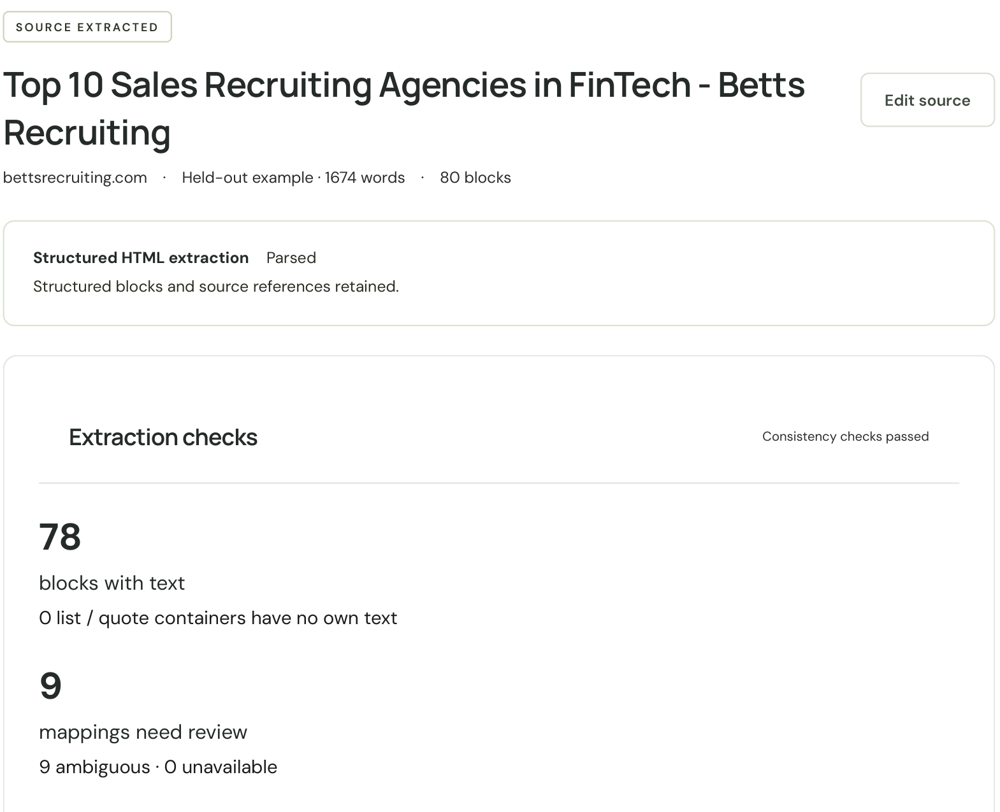
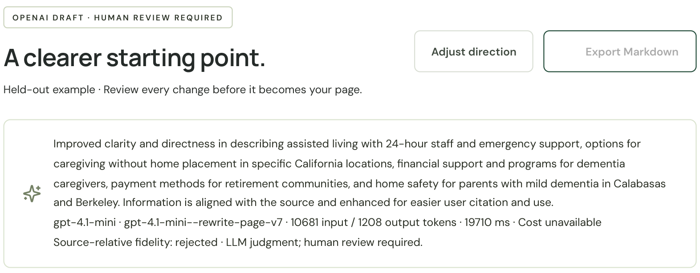
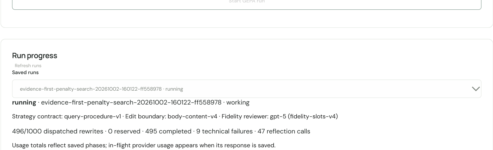
Analyze
Source blocks + per-query P1
Explain
Diffs + exact score effects
Optimize
Grounded rewrites + GEPA
03 / Dataset overview
Citation records: examples and data quality
9,700 records
970 hostnames
5 top + 5 bottom
Per host; both already cited
9,527 URLs
Distinct exact URL strings
9,011 prompts
Distinct nonblank strings
Two actual records · bryteflow.com
“Which is the best ETL tool to migrate data from SAP HANA to Redshift?”
| Label | Cited page | Words¹ | Headings¹ |
|---|---|---|---|
| Top | Migrate SAP data to Redshift /sap-to-redshift | 1,662 | 30 |
| Bottom | SAP on AWS — The Fundamentals /sap-on-aws-fundamentals | 3,921 | 9 |
A migration-specific page versus a broader fundamentals page—not a controlled before/after comparison.
¹ Exploratory text extraction. Source: part_001, rows 393 and 400.
Data-quality checks
91 empty prompts · 0.94%
70 top / 21 bottom; empty strings, not nulls.
28 excess exact duplicate rows
Separate from repeated URLs or prompts.
14 URLs have both labels
76 rows involved.
185 possible failed scrapes
Text-heuristic flags, not confirmed failures.
Comparison limit: 920 / 970 hosts have no shared normalized nonblank query across labels.
Selected examples · report samples 01 and 02
Same query, two substantive pages
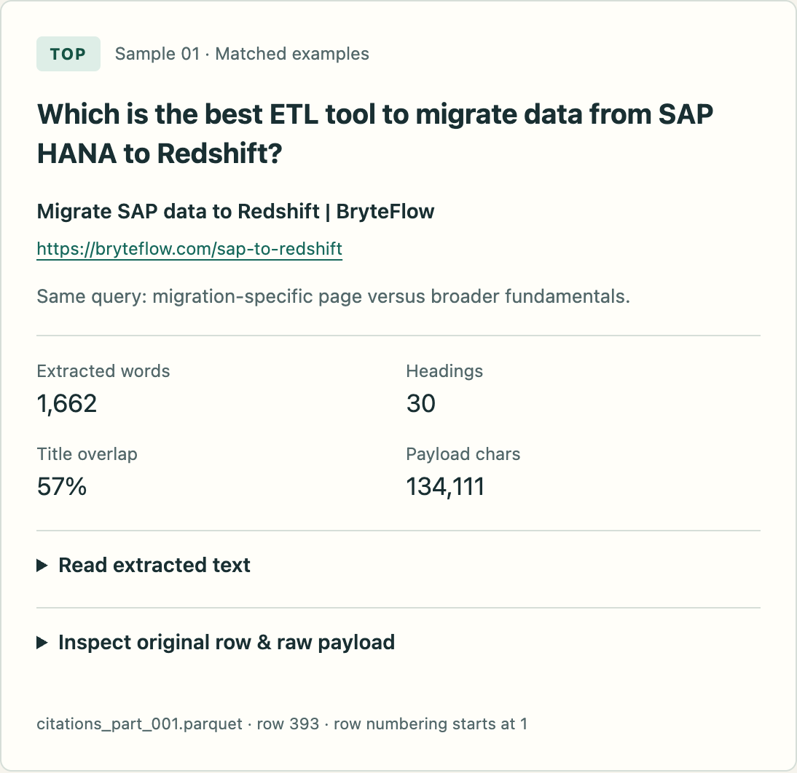
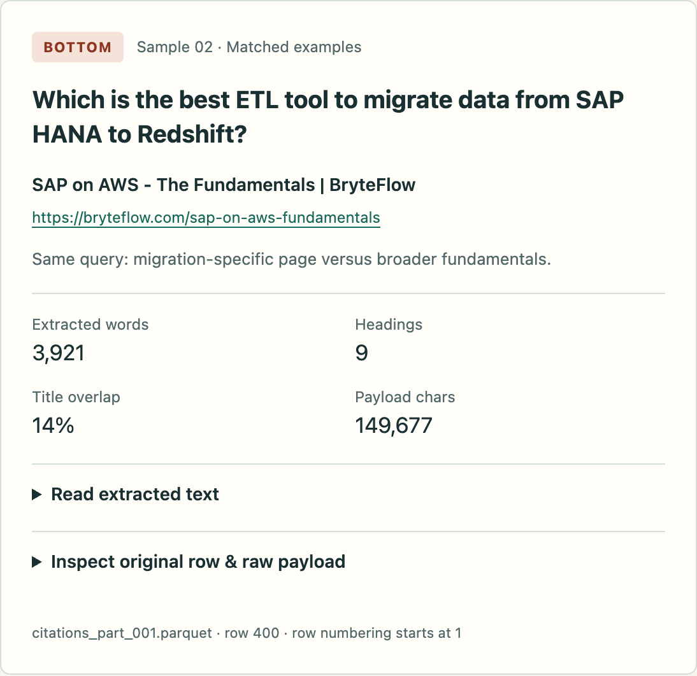
04 / What we are building
Train the scorer. Use it to guide a rewrite.
05 / The content foundation
A source contract every stage can share.
Retain the evidence, preserve its structure, then score and rewrite the same representation.
REAL MARKDOWNIFY CORPUS RECORD · SELECTED FIELDS
Blocks preserve identity and provenance. Chunks group evidence; derived embeddings represent the text.
Retention is a tradeoff
Earlier held-out HTML benchmark
| Method | Retained | Leakage |
|---|---|---|
| Baseline | 121/129 | 30/50 |
| Trafilatura | 100/129 | 11/50 |
| Readability | 111/129 | 11/50 |
| Conservative DOM | 126/129 | 46/50 |
Selected anchors, AI-assisted references. This report predates the final Markdownify choice.
3,072D textual embeddings in local vector shards.
06 / Feature engineering
P1 combines semantic alignment with page context
55 crafted inputs: 10 semantic similarities + 45 context features.
| Feature family | Count | Examples |
|---|---|---|
| Semantic alignment | 10 | Query ↔ URL path / title / H1 / page; best-section and top-3 section similarity |
| Query characteristics | 4 | Prompt length; question / comparison / how-to flags |
| URL context | 5 | Path depth; homepage / editorial / commerce flags |
| Size & structure | 13 | Log word / heading counts; headings per 1,000 words; has table |
| Text composition | 14 | Unique-word / numeric-word fractions; paragraph length; links per 1,000 words |
| Source metadata | 4 | JSON-LD / article schema; source script count; empty title |
| Extraction quality | 5 | Retained-text fraction; sparse body; possible error response |
Semantic-similarity weights
From your saved weight report · page 3
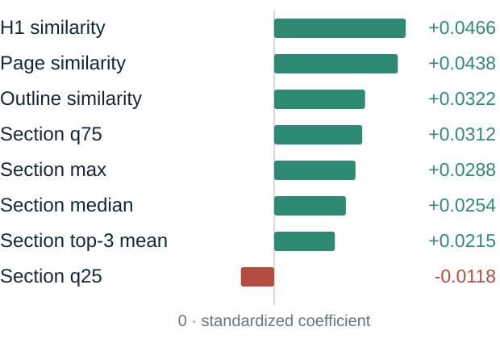
Fitted weights, not editing importance.
Editing effect = weight × feature change.
07 / Explainability
The score moves.
The interface shows why.
displayed P1 points
for this query
sum of log-odds effects
Page similarity helped.
Unique-word fraction offset some gain.
Every changed feature contributes.
37.99 → 37.91
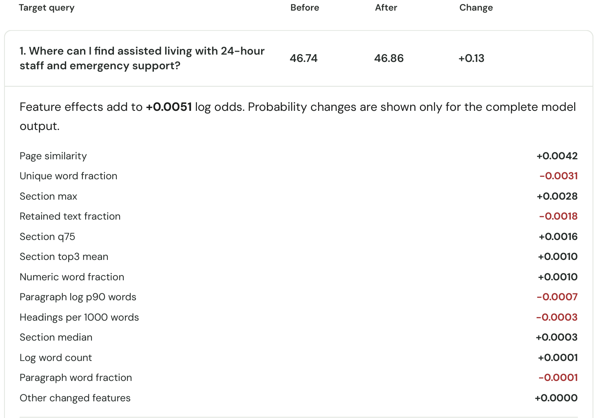
08 / From analysis to instructions
We started with what P1 taught us.
The baseline directs supported improvements across the query group. Feature analysis shapes the search guidance.
“Use the whole-document P1 feedback to aim for a higher equal-weight mean while avoiding individual regressions.”
“Make substantive body improvements where supported, not merely title changes.”
rewrite-page-v7.txt · fixed source and output contract
P1 observation → permitted action
H1 and outline alignment
Clarify the supported subject of existing editable headings.
Page and section alignment
Make existing answers and relationships more direct in body paragraphs.
Strong signals can be fixed
Title and URL explain scores but stay outside the edit boundary.
Prompt anatomy / structure only
Promoted prompt structure
SYSTEM
Role + goal
Evidence-bound rewriting for a group of queries
Promoted procedure
Map chunks → classify support → edit → check → report
Fixed constraints
Same-chunk evidence · edit boundaries · language · security
USER
JSON
Task + queries
Whole-page task · target queries · objective · tone
Scoring context
Per-query P1 · procedure rationale · reflection provenance
Source context
Metadata + chunks · editable blocks · read-only evidence
Required response: one proposal → each editable block is an edit or null
09 / Multi-query optimization
One page has to serve more than one question.
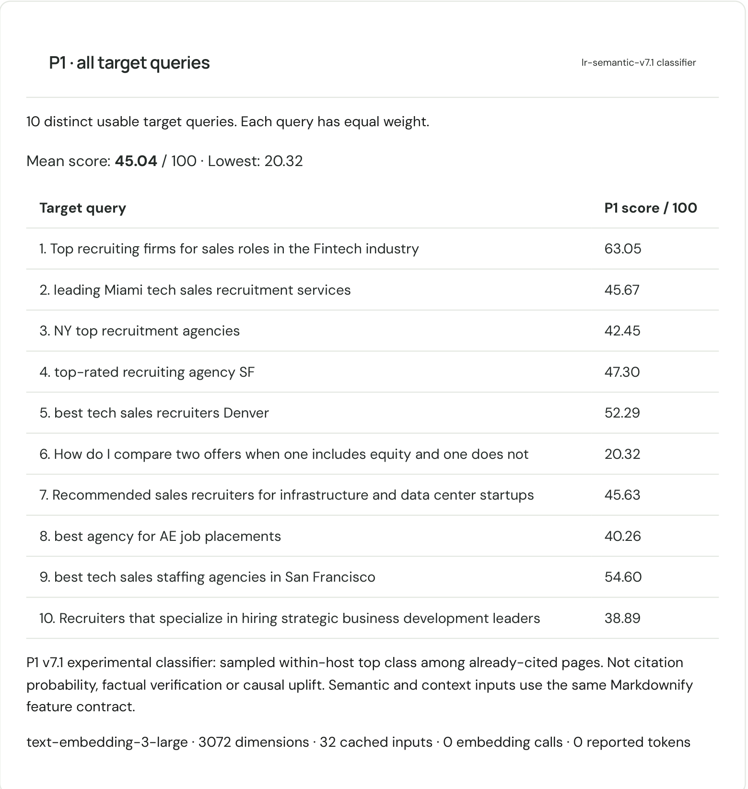
One coordinated proposal.
Equal weight as the baseline.
The mean is not the whole result
The review interface retains every regression.
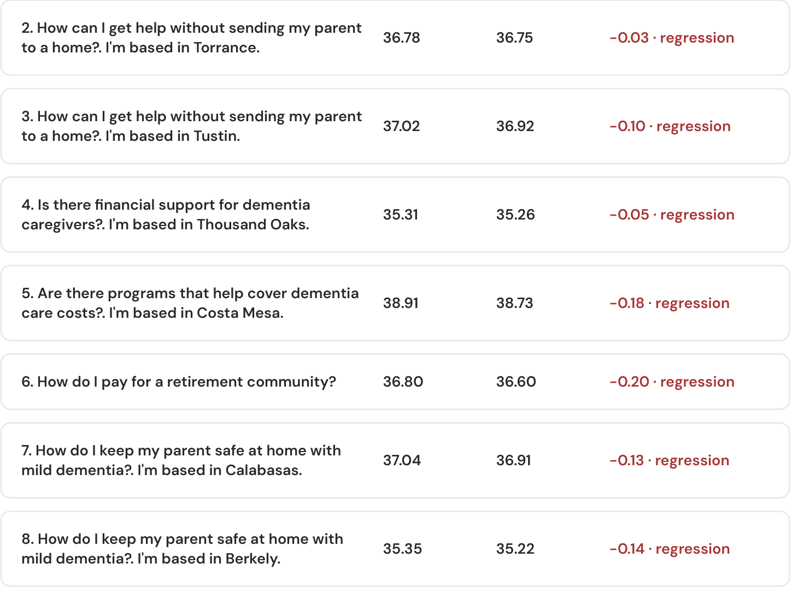
10 / What broke
The proxy rewarded a rewrite
that changed the page’s language.
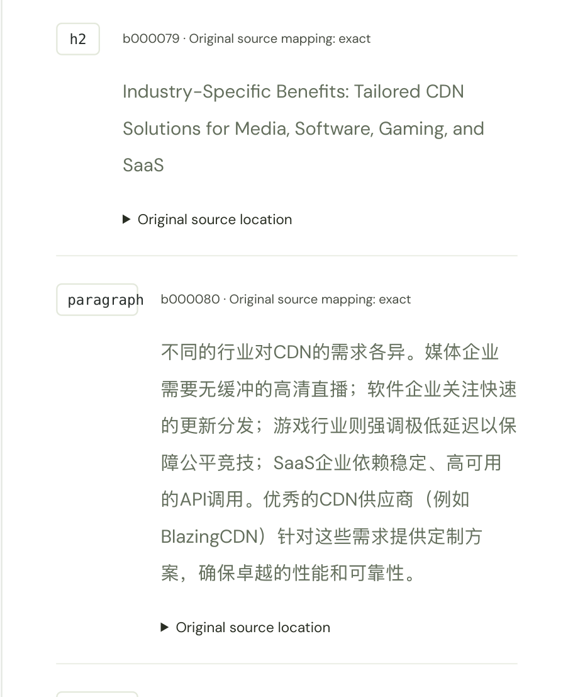
HISTORICAL FAILURE · P1 v2
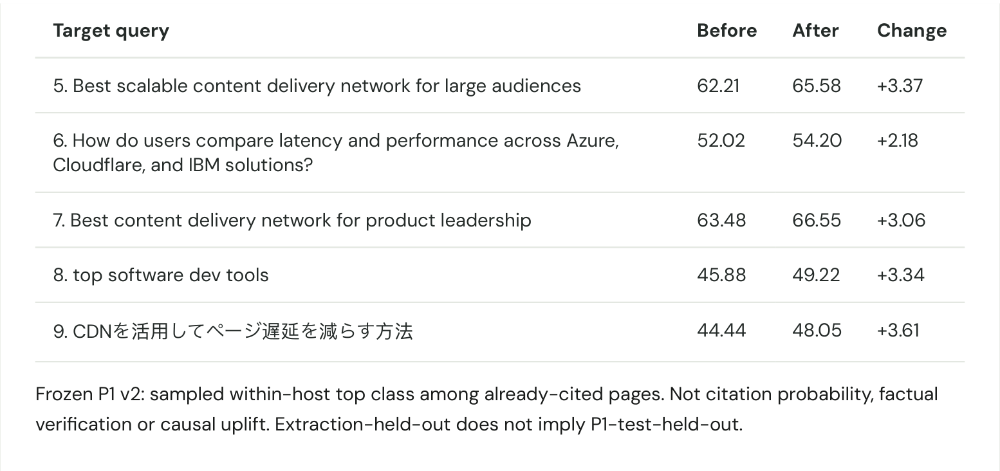
P1 points on the Japanese query
A better score can still be an unacceptable edit.
11 / Guardrails from observed failures
Source-relative checks catch
changes a score cannot judge.
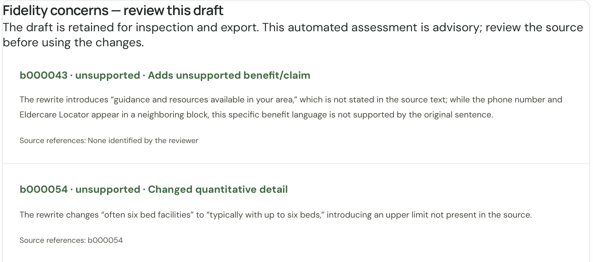
The judge flags the invented upper limit. The finding stays inspectable.
Mechanical contract
Valid IDs, allowed edit targets, same-chunk evidence and complete output.
Language preservation
Follow each original block’s language, even when the query uses another language.
Factual review
GPT-5 findings inform human review and GEPA’s penalties. The judge can be wrong.
12 / DSPy-powered GEPA
Prompts are the offspring.
Pages are the fitness tests.
PARENT PROCEDURE
Put supported answers first.
REFLECTED MUTATION
Preserve the qualifications
the parent omitted.
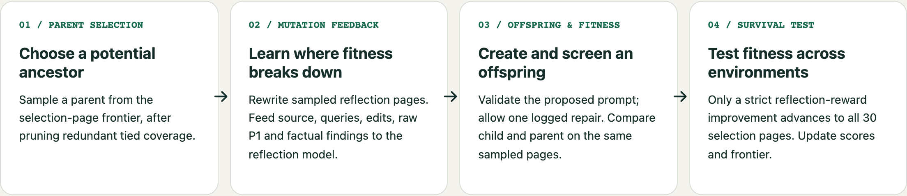
The mutable genome is the editorial procedure. Security, source boundaries and output contracts stay fixed.
13 / A bounded search
Fidelity findings become per-block penalties
Reward = mean P1 − penalties for edited blocks with fidelity concerns
Unsupported → −0.05
Unsupported claims, changed facts, lost material qualifiers or important omissions.
Uncertain → −0.02
The checker cannot establish sufficient support.
Supported → no fidelity penalty
Three unsupported claims in one block: −0.05.
Unsupported + uncertain in one block: −0.05.
The penalty does not distinguish issue count or severity within a block.
Example: two flagged blocks → 0.05 + 0.02
P1 0.41 − 0.07 = reward 0.34
Run budget ↗ · 60 reflection / 30 selection pages
50 proposals · 1,000 attempts · test excluded
ILLUSTRATIVE GPT-5 RESPONSE · NOT A RUN LOG
{
"edits": {
"b000041": {
"verdict": "unsupported",
"category": "changed_quantitative_scope",
"reason": "The source gives a typical size, not a maximum capacity.",
"source_ids": ["b000041"]
},
"b000087": {
"verdict": "uncertain",
"category": "ambiguous_service_hours",
"reason": "Extended hours does not establish evening coverage.",
"source_ids": ["b000087"]
}
}
}Schema-shaped excerpt; reasons wrapped for display. Each edit is judged only against its original chunk. Source IDs identify reviewed evidence, not proof of support.
14 / What survived
The best raw score did not win.
The selected procedure balances relevance, factual deductions and execution reliability.
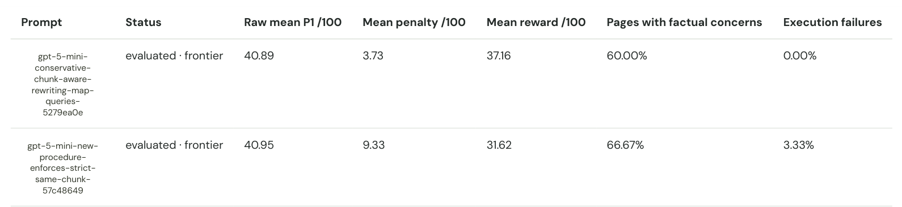
| Final selection results · /100 | Run baseline | Recommended | Change |
|---|---|---|---|
| Raw mean P1 | 40.8184 | 40.8921 | +0.0737 |
| Mean deduction | 5.9333 | 3.7333 | −2.2000 |
| Mean reward | 34.8851 | 37.1588 | +2.2737 |
15 / What the prompt learned
Evidence first became the procedure.
“Conservative default: minimal single-paragraph edits, preserve original language/voice/qualifiers, and use harness fidelity feedback to remove unsupported changes.”
Saved editorial strategy · candidate 7dfc4cc5…
Map support before writing
Classify query support as full, partial or none against same-chunk evidence.
Keep the edit local
Preserve qualifiers and reuse supported wording. Report uncovered queries.
Promote with traceability
Versioned, model-specific procedure; saved evidence; explicit selection.
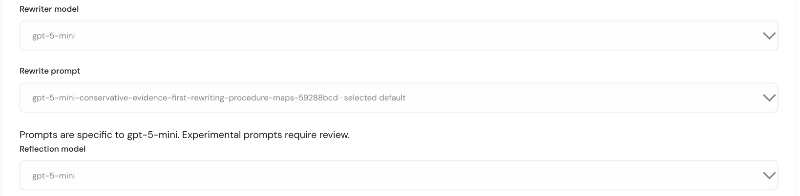
Next steps
Test what actually improves the page
About 97% of the reward gain came from fewer fidelity penalties, not higher P1.
Compare four versions of the same pages to understand why.
1. Leave the page unchanged
- Keep the original words and layout.
- Use its score as the starting point.
2. Change only the wording
- Make existing answers clearer; add no new facts.
- Keep the headings, lists and layout the same.
3. Change only the structure
- Keep the words; change permitted formatting.
- Check whether P1 rises without a better answer.
4. Change both
- Combine clearer wording with better structure.
- Check whether the combination helps more.
For each version: compare P1 and factual errors. Ask reviewers which answer is more useful, without telling them how it was made.
18 / Future initiatives
Improve the value model.
Then broaden the learning loop.
NEXT EXPERIMENT
Reward useful edits
Calibrate factual penalties and judge behavior.
Test a stronger P1 and expose actionable feature values.
Integrate the prototyped 0–3 usefulness judgments.
PRODUCT EVIDENCE
Learn from outcomes
Screen irrelevant query intents.
Add brand knowledge and competitor context.
Capture citation positions, co-occurrence and publication outcomes.
LONGER-TERM ROI
Make it cheaper to run
Distill strong-model traces into a smaller model.
Explore reinforcement fine-tuning, such as GRPO, after reward validation.
Keep promotion, monitoring and rollback explicit.